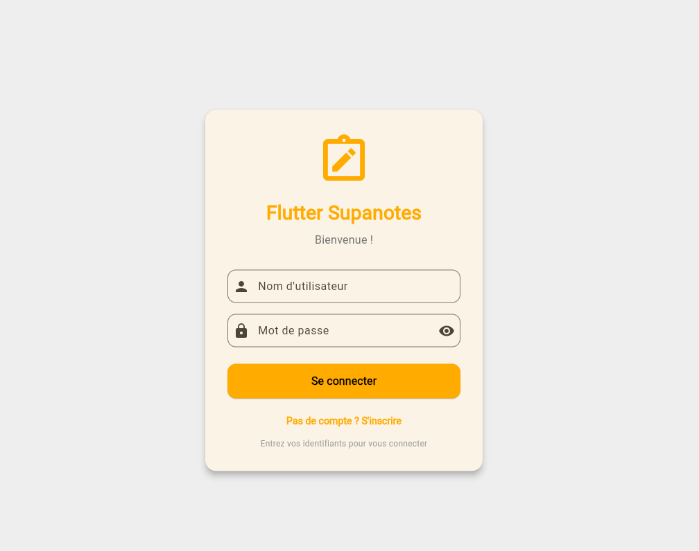

Application mobile
To-Do App Flutter
Application mobile de gestion de tâches développée avec Flutter : ajout, suppression et organisation des tâches dans une interface simple, moderne et responsive.
Présentation
Cette application est une TODO list mobile réalisée avec Flutter. L'objectif était de se familiariser avec le framework (widgets, navigation, état) en construisant une app concrète, utile et testable directement sur mobile. L'utilisateur peut ajouter, visualiser et gérer ses tâches dans une interface claire.

Fonctionnalités principales
- Liste des tâches — affichage des tâches sous forme de liste, avec un design simple et lisible.
- Ajout de tâche — formulaire ou champ dédié pour saisir une nouvelle tâche et l'ajouter à la liste.
- Gestion des états — possibilité de marquer une tâche comme réalisée ou de la supprimer.
- Interface responsive — mise en page adaptée aux différents formats d'écran (smartphone, tablette).
Architecture de l'application
Organisation du code en widgets (écran principal, éléments de liste, formulaires), utilisation de la hiérarchie de widgets Flutter pour composer l'interface.
Logique de gestion des tâches (liste en mémoire) et rafraîchissement de l'interface lors des ajouts, suppressions ou modifications.
Technologies & compétences
Ce projet m'a permis de pratiquer la structure d'une app Flutter, la composition de widgets et les bases de la gestion d'état pour une petite application de production. J'ai également travaillé le design pour garder une interface cohérente avec le reste de mon univers graphique.